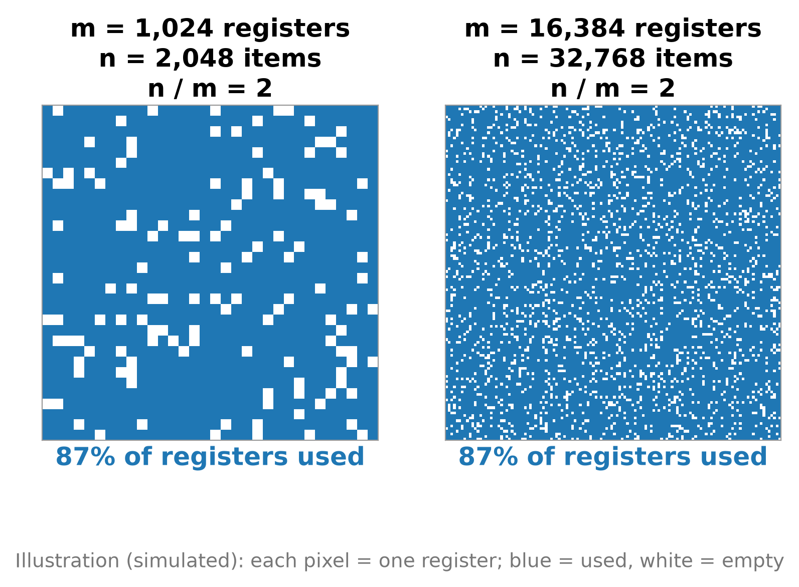
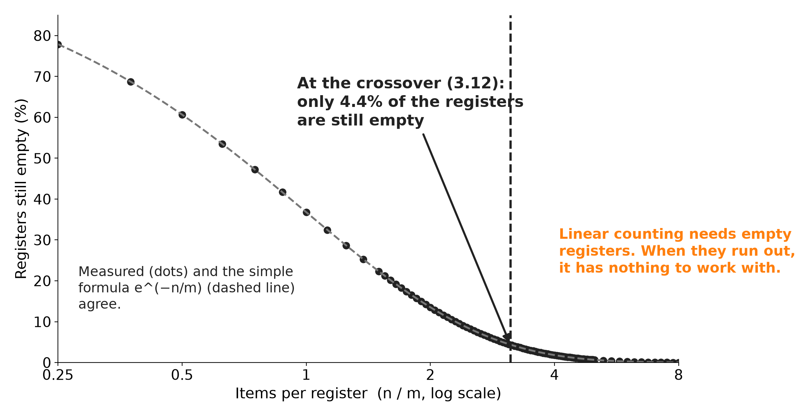
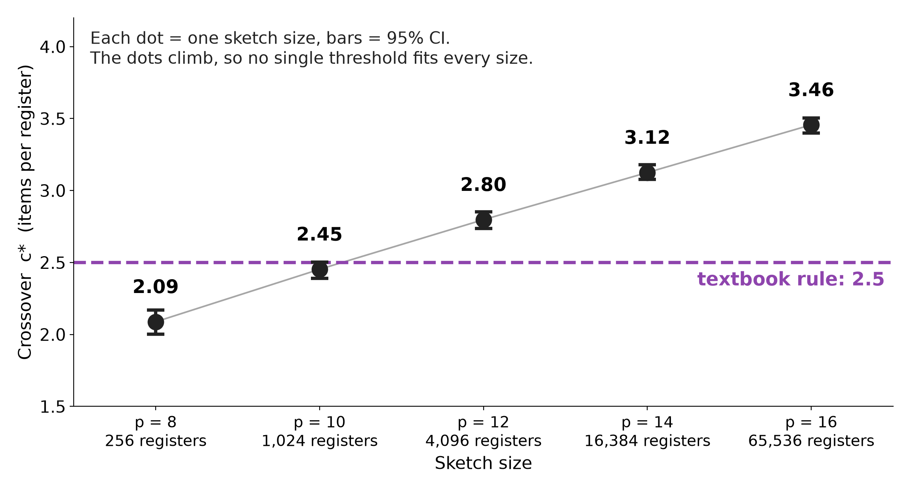
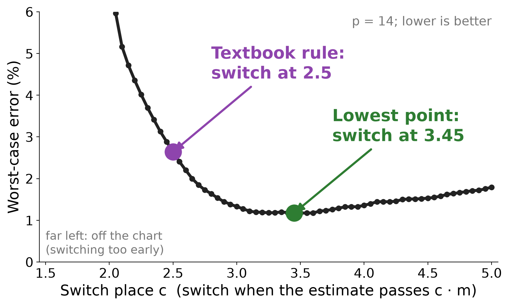
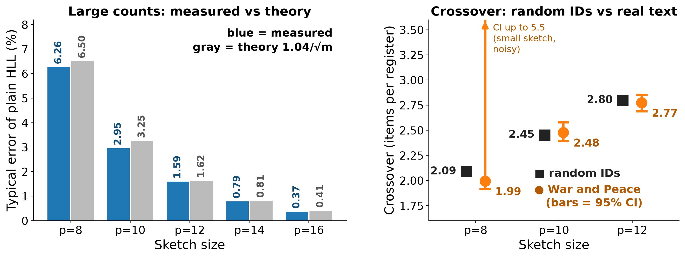
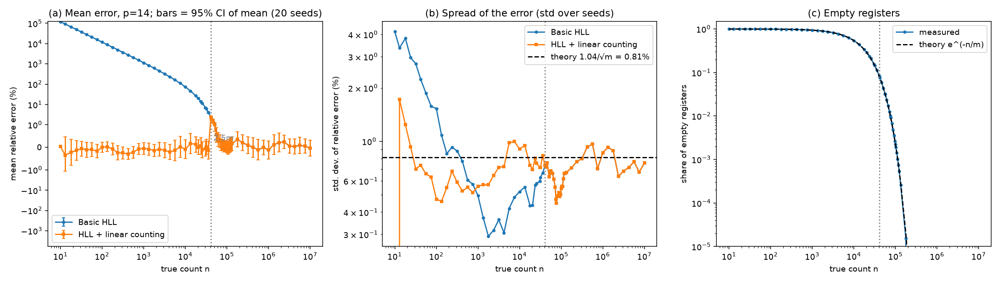
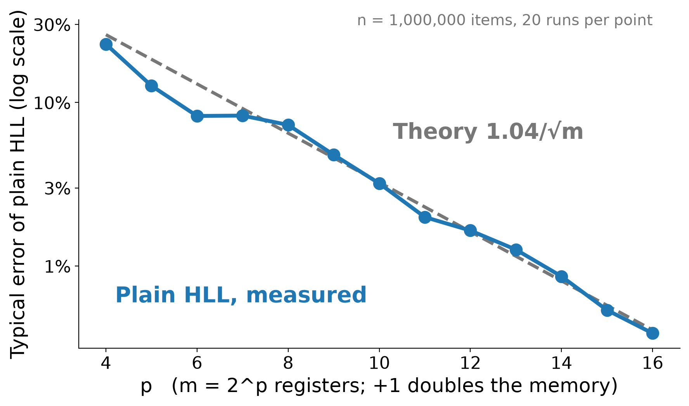
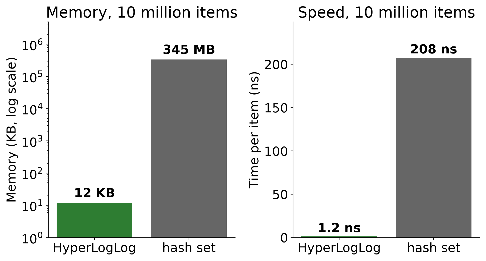

When does linear counting stop helping HyperLogLog?
Ibrahim and Nika · Advanced Algorithms & Data Structures, Fall 2026 · project report
Goal. At what number of distinct items n does plain HyperLogLog (HLL) become accurate enough that linear counting (LC) no longer helps, and below which is HLL + linear counting better? We measure the border as a ratio c* = n*/m (items per register, m = 2p), test whether one value works for every sketch size, and compare the best switch rule that uses only what the sketch can observe with the textbook rule “use LC when the raw estimate E ≤ 2.5·m”.
Result. The crossover is not a constant. It grows from c* = 2.09 at p = 8 to 3.46 at p = 16, with 95% confidence intervals of about ±0.05 to ±0.09, so the hypothesis “one fixed threshold ≈ 2.5 fits every size” is rejected. Switching at c(p)·m with c(p) = 1.53 + 0.1325·p, measured on runs not used to fit it, gives the following:
p = 8: no gain, because the textbook rule is already best there.
p = 14: the worst-case error falls from 2.71% to 1.21% and the hand-over bump from 2.48% to 0.56%.
p = 16: the worst case falls to 0.24 times the textbook value.
1. Background in one paragraph
HLL keeps m registers. Each item is hashed, the first p bits choose a register, and the register keeps the longest run of leading zeros seen. The plain HLL estimate E is computed from the register values and is far too high when most registers are still empty (an empty sketch already says 0.72·m). Linear counting instead counts the empty registers V and estimates m·ln(m/V); it is accurate while many registers are empty. Implementations switch between the two with a textbook rule: use LC if E ≤ 2.5·m and V > 0. The constant 2.5 is used without justification, and it is the same for every sketch size. That is what we test.
2. Why we measure in items per register (n / m)
m is the number of registers, the sketch's memory slots. n/m is the average number of distinct items per register, so it says how full the sketch is. Both estimators care about how full the sketch is, not about the absolute n. Two sketches of very different size at the same n/m look the same (Figure 1), so if one switch rule could work for every size, it would be a rule in n/m. Example: for p = 14 (m = 16,384), n/m = 2 means n = 32,768 items.

Figure 1 (illustration, simulated). Two sketches fed twice as many random items as they have registers (n/m = 2): 1,024 registers with 2,048 items (left) and 16,384 registers with 32,768 items (right). Each pixel is one register; blue = used, white = still empty. Both have about 87% of their registers used. That is why we put n/m, not n, on the x-axis.
3. Method
Inputs. Random 64-bit IDs with repeats from our generator, so the true count n is known exactly; XXH3-64 hash with a different seed per run. Real-text check: the words of War and Peace in their real order, with the distinct count measured exactly with a hash set.
Grid. p = 8, 10, 12, 14, 16. For each p, 93 values of n/m from 0.25 to 8 (step 0.125 up to 1.5, 0.05 between 1.5 and 5, 0.25 from 5 to 8). 500 runs per point, 200 hash seeds for the real text. For each run one stream feeds one sketch, and we record E and V at every grid point, so all methods see identical sketches.
Error. The error of one estimate is (estimate − n)/n. The typical error at a grid point is the root-mean-square of this over the runs.
Crossover c*. The smallest n/m after which plain HLL's typical error stays at or below LC's for every larger n/m, interpolated linearly between grid points. 95% CI by bootstrap over runs (1,000 resamples).
Switch rules.estimate_switch(c) uses LC if E ≤ c·m and V > 0, else E. c = 2.5 is the textbook rule (our unchanged estimate_lc()).
Worst case: the largest typical error anywhere on n/m = 0.25…8.
Hand-over bump: the largest average error (bias) on that range; for a switch rule it sits at the switch.
The best threshold c is chosen on the odd-numbered runs and all comparisons are measured on the 250 even-numbered runs, so the improvement is not inflated by the choice.
4. Results
4.1 The crossover for one sketch size (p = 14)
Figure 2 (plot A). Typical error (log scale) against items per register n/m (log scale; the top axis shows the same position in items for p = 14) for plain HLL and linear counting, 500 runs per point. Shaded bands around the lines are 95% confidence intervals. The dashed line is the crossover: c* = 3.12 (95% CI 3.08–3.18), about 51,200 items. To the left LC is better, to the right plain HLL is better. At 0.25 items per register plain HLL is 239% off while LC is 0.57% off; at 8 items per register LC is 6.4% off and plain HLL 0.79%.
4.2 Why the crossover happens

Figure 3 (plot E). Share of registers that are still empty against items per register (p = 14). Dots are measured, the dashed line is the formula e−n/m; they agree. At the crossover only 4.4% of the registers are still empty. LC estimates from the empty registers, so when almost none are left its error grows quickly, and plain HLL takes over.
4.3 Does the crossover depend on the sketch size? Yes
Figure 4 (plot A, all sizes). The same curves for p = 8 … 16 (one thin pair per size, darker = larger sketch; blue plain HLL, orange LC), with the crossovers marked as dots. Left: x-axis = number of items n; the crossovers lie between 535 and 226,521 items. Right: x-axis = items per register n/m; the crossovers lie between 2.1 and 3.5. Using n/m removes most of the size dependence, but not all of it.

Figure 5 (plot B). Crossover c* against sketch size; bars are 95% bootstrap CIs; the purple dashed line is the textbook value 2.5. If one rule fitted every size, the dots would lie on a horizontal line. They climb by about 0.17 per extra bit of p and the intervals do not overlap, so the hypothesis of one fixed crossover is rejected. 2.5 is close only around p = 10.
p
m
c*
95% CI
n* (items)
simple model
8
256
2.09
2.00–2.17
535
2.33
10
1,024
2.45
2.39–2.50
2,512
2.54
12
4,096
2.80
2.74–2.85
11,459
2.89
14
16,384
3.12
3.08–3.18
51,200
3.18
16
65,536
3.46
3.40–3.51
226,521
3.46
Explanation. Plain HLL's average over-estimate at a given n/m hardly depends on m: +5.5% at n/m = 2 and +2.4% at n/m = 2.5 for every p ≥ 10. LC's random error shrinks like 1/√m. A bigger sketch therefore keeps LC better for longer. A simple model built from this reproduces c* within 0.09 for p ≥ 10 (0.24 off at p = 8; last column). In the model, plain HLL's typical error² is the measured bias² plus its noise², and LC's typical error² is (et − t − 1)/(t²m) at t = n/m.
4.4 The best switch rule and its impact
A real rule cannot use n, only E, V and m. We therefore scan the threshold c in “use LC while E ≤ c·m”.

Figure 6 (plot D). Worst-case error, the largest typical error anywhere on n/m = 0.25…8, against the switch threshold c (p = 14, the 250 odd-numbered runs used for choosing). Each point is a different place to switch, and lower is better. The textbook 2.5 lies on the steep part of the curve; the lowest point is at c = 3.45. Switching much too early (left edge) leaves the large small-count error of plain HLL.Figure 7 (the two measures). Error of the textbook rule at p = 14 against items per register. Solid line: typical error; its tallest point is the worst case. Dotted line: average error (bias); its tallest point is the hand-over bump, the extra over-estimate right where the estimator switches from LC to plain HLL at 2.5.Figure 8 (plot C). Worst case and hand-over bump at p = 14 for plain HLL only, the textbook rule (2.5) and the best rule (3.45), measured on the 250 even-numbered runs that were not used to choose the threshold. Black bars are 95% bootstrap CIs. The best rule cuts the worst case from 2.71% to 1.26% and the bump from 2.48% to 0.50%. Plain HLL alone is 239% off at 0.25 items per register, so it is drawn cut off.Figure 9. Worst-case error of the textbook rule and the best rule for every sketch size (test half, 95% CIs). The gain grows with the sketch size: none at p = 8, large at p = 14 and p = 16.
p
rule
switch c
worst case (95% CI)
hand-over bump (95% CI)
worst case ÷ textbook (95% CI)
8
textbook / best
2.50
7.21% (6.80–7.77)
1.84% (1.24–2.54)
1.00
8
formula c(p)
2.59
7.05% (6.69–7.65)
1.72% (1.10–2.40)
0.98 (0.96–1.01)
10
textbook
2.50
4.11% (3.88–4.36)
2.18% (1.83–2.50)
–
10
formula c(p)
2.86
3.92% (3.58–4.26)
1.02% (0.70–1.41)
0.96 (0.88–1.03)
12
textbook
2.50
2.93% (2.77–3.07)
2.30% (2.12–2.47)
–
12
formula c(p)
3.12
2.16% (1.98–2.33)
0.71% (0.54–0.87)
0.74 (0.68–0.79)
14
textbook
2.50
2.71% (2.61–2.79)
2.48% (2.39–2.55)
–
14
formula c(p)
3.38
1.21% (1.13–1.34)
0.56% (0.46–0.66)
0.45 (0.42–0.49)
16
textbook
2.50
2.65% (2.61–2.69)
2.60% (2.53–2.66)
–
16
formula c(p)
3.65
0.62% (0.58–0.68)
0.28% (0.23–0.32)
0.24 (0.22–0.26)
For practice we fitted one line to the best thresholds (training runs only): c(p) = 1.53 + 0.1325·p. On the test runs it is as good as choosing c separately for each p (overlapping CIs; per-p values in results/exp5_rules.csv). The gain is significant from p = 12 upward. At p = 10 only the bump improves, and at p = 8 nothing changes. A rule on the share of empty registers (use LC while V/m > f) performs about as well as the threshold rule.
4.5 Sanity checks

Figure 10. Left: typical error of plain HLL at 8 items per register (blue, measured over 500 runs) against the theory value 1.04/√m (gray). The measured values are 0.91–0.98 times the theory, for example 0.79% against 0.81% at p = 14. Right: crossover on random IDs (black squares) against the crossover on War and Peace (orange, 95% CI over 200 hash seeds). The two agree at p = 10 (2.48 vs 2.45) and p = 12 (2.77 vs 2.80). At p = 8 the real-text interval is wide (1.92–5.55), because one fixed text gives a noisy small sketch. Larger p is not possible: the text has only 17,445 distinct words.
5. Conclusion and limits
Linear counting stops helping at c* = 2.09 to 3.46 items per register, and the border moves to the right as the sketch grows. The textbook constant 2.5 is therefore right only for small sketches. Switching at c(p)·m, with c(p) = 1.53 + 0.1325·p, is a drop-in change of one constant. For p ≥ 12 it removes 26% to 76% of the worst-case error and most of the hand-over bump. Limits:
We used random IDs and one real text, one hash function, p = 8…16, and the range n/m = 0.25…8.
Results outside these settings may differ.
Our code stores 1 byte per register (16 KB at p = 14); the 12 KB figure is for packed 6-bit registers.
Future work: derive c(m) from theory and test other hashes and real streams.
6. Supporting experiments (first phase)
These answer the earlier, broader questions. They still hold and are summarized in results/FINDINGS.md, section 2.

Figure 11 (experiment 1, p = 14, 20 runs). (a) Mean relative error and (b) spread of the error against the true count n for basic HLL and the textbook HLL + LC. (c) Share of empty registers. Error bars are 95% CIs of the mean. At 1,000 items basic HLL is +1130% off (12.3 times too big), while HLL + LC is −0.05% off. From 106 items both have a spread of 0.64–0.93%, around the theory 0.81%. The jump right of the dotted switch line is the hand-over bump studied above.

Figure 12 (experiment 2, n = 106, 20 runs). Typical error of plain HLL against p, with the theory 1.04/√m as a dashed line. They agree for p = 4…16. Correction to our seminar slides: the typical error at p = 14 is 0.81%, not about 2% (2% belongs to p = 11).

Figure 13 (experiment 3, p = 14, 10 million items, median of 21 timed runs). HLL needs 12 KB with packed 6-bit registers (16 KB as our code stores it) and 1.2 ns per item. An exact std::unordered_set needs 345 MB and 208 ns per item. Across n = 103…107 HLL is 8 to 170 times faster. Linear counting adds no time to updates, and the estimate step costs about 28 µs for both versions. Correction to our seminar slides: 16,384 registers × 6 bits = 12 KB, not 1.5 KB.
Experiment 4 (full War and Peace text, 583,368 words, 17,445 distinct, 20 hash seeds) gives the same picture as random IDs. At p = 14 (n/m = 1.06) basic HLL is +27.85% off and HLL + LC −0.18% (spread 0.72%, theory 0.81%). For p ≤ 12 both agree with 1.04/√m (results/exp4_real.csv).
The slide-10 test uses our own hand-computed example (16 registers, basic estimate 23.16, linear counting 33.27), because the seminar slide's numbers were not available. Code, data and CSVs are in the repository. The commands are in README.md.